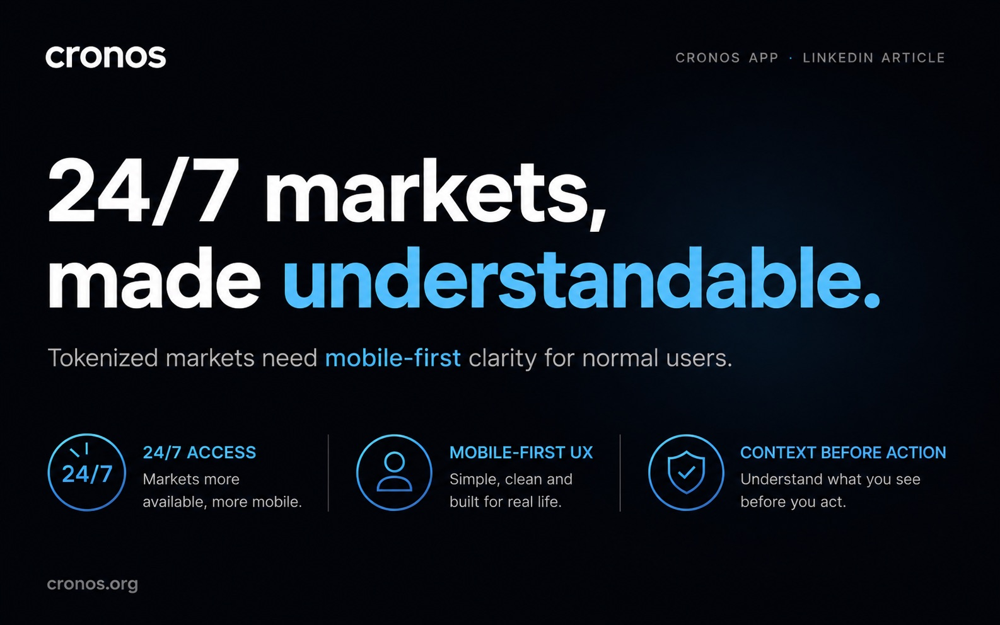

What WolfSwap Shows About the Cronos Ecosystem
A useful product can reveal how an ecosystem grows through clearer entry points, better layers and practical utility.
English
A full archive of English posts, from Medium articles to LinkedIn notes, all in one place.
English archive
Latest first, with direct links to the article pages and the original source.
A useful product can reveal how an ecosystem grows through clearer entry points, better layers and practical utility.

A clearer market product is not a trading product. It is a trust product with better context and less noise.

Fragmented financial apps create hesitation. Simpler language and fewer moving parts help users build trust faster.

Tokenized markets need mobile-first clarity if they want normal users to trust what they see on screen.
Product clarity matters more than another technical feature drop when the goal is to attract normal users.